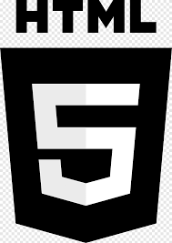

Curso de Html5 com css3

Curso de HTML5 – Criação de Páginas Web do Zero Aprenda a desenvolver páginas modernas e responsivas utilizando HTML5, a linguagem padrão para estruturação de conteúdo na web. Neste curso, você vai conhecer desde os conceitos básicos até recursos avançados, incluindo: Estrutura e semântica de documentos HTML Uso de tags e atributos essenciais Inserção de textos, imagens, links, tabelas e formulários Elementos multimídia (áudio e vídeo) Boas práticas de acessibilidade e SEO Integração com CSS e JavaScript O curso é 100% prático, com exercícios e projetos reais para fixar o aprendizado. Ao final, você será capaz de criar sites bem estruturados, compatíveis com diferentes navegadores e prontos para receber estilos e interatividade. Público-alvo: iniciantes em desenvolvimento web, designers, empreendedores e qualquer pessoa que queira criar ou editar páginas na internet. Pré-requisitos: conhecimento básico de informática e navegação na web.